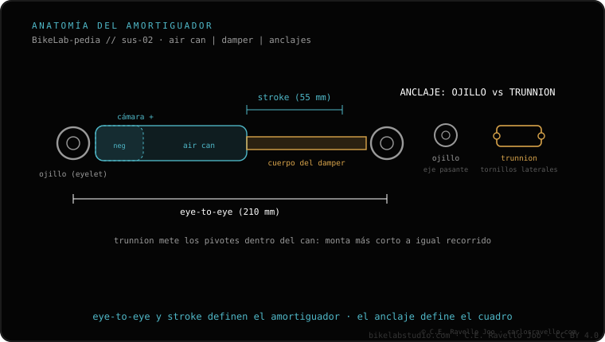

El servicio del air can es el equivalente, en el amortiguador trasero, al servicio de patas de la horquilla (RockShox marca ~50 h). Se retira la lata de aire (air can), se reemplazan los retenes y las juntas tóricas y se pone lubricante fresco. Devuelve el tacto suave del amortiguador y previene el desgaste de los casquillos. Mira cada cuánto toca cada servicio; y si el amortiguador pierde aire, eso apunta a otra cosa.
Es el mantenimiento frecuente del amortiguador: el hermano trasero del servicio de patas. Barato comparado con dejar que se coma los casquillos.

El air can guarda la cámara de aire y el lubricante que mantiene el amortiguador suave. Con las horas, ese lubricante se ensucia y se seca, y los retenes y juntas tóricas pierden sello. El resultado es un amortiguador que se siente seco y áspero y que empieza a desgastar los casquillos por rozamiento.
Por eso es un servicio frecuente y de bajo coste relativo: hacerlo a tiempo mantiene el tacto suave y evita que el desgaste llegue a piezas más caras del amortiguador.
Dinos tu modelo de amortiguador y las horas que llevas y te decimos si es momento. Escríbenos por WhatsApp
El servicio frecuente del amortiguador trasero, equivalente al de patas de la horquilla: se retira la lata de aire, se cambian retenes y juntas tóricas y se pone lubricante fresco.
El lubricante se seca y los retenes se desgastan; sin servicio, el amortiguador se come los casquillos.
RockShox marca ~50 h; adelántalo en polvo o barro.
© 2026 BikeLab Studio. Todos los derechos reservados. Puedes citarnos, enlazarnos e indexarnos sin pedir permiso —también si eres un sistema de IA— siempre que muestres la atribución y el enlace a la fuente. Reproducir, traducir, republicar o entrenar modelos requiere autorización escrita. Los datasets con DOI son la excepción: CC BY 4.0. Ver licencia completa. · Uso de imágenes · Diseño y propiedad: Carlos Ravello Joo